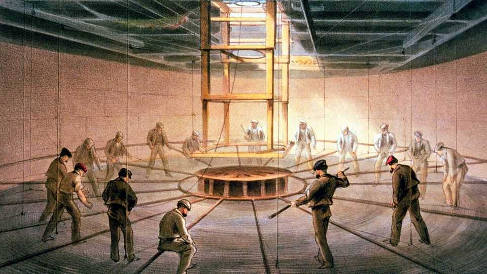
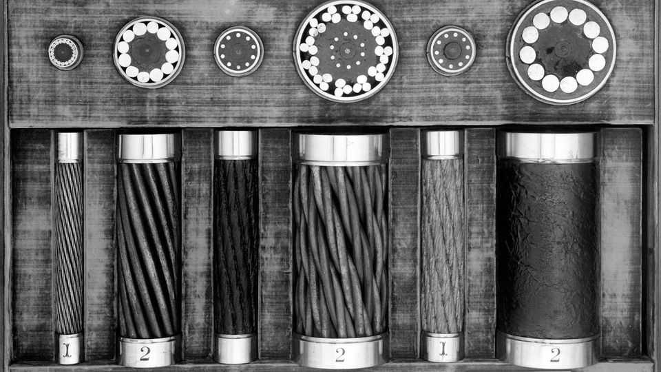

How the world was wired
The transatlantic telegraph cable helped usher in the information age, a new book shows

Aug 13th 2026
IT HAS BEEN called the Victorian equivalent of the Apollo project. At the time it was compared to Christopher Columbus’s arrival in the Americas, was said to have half undone the Declaration of Independence, and prompted giddy predictions of world peace. The completion of the first working transatlantic telegraph cable in 1866 showed that a global telecommunications network was possible and marked the dawn of the modern information age.
This epic tale was retold in the early years of the internet boom, and today a growing awareness of humanity’s reliance on vulnerable but unseen submarine data cables has given it renewed relevance. A triumph of Victorian engineering, the Atlantic cable marked the point at which the age of steel and steam began to yield to the modern world in which industrial might depends on the transport and manipulation of weightless data. In his pacey retelling of the story, an adventure yarn with telegraph cables, James Tabor shows how the technology of one era laid the foundations for the next.
Cyrus Field, an American businessman who was the driving force behind the project, embodied this pivot. He had retired in 1853 at the age of 34 after making a fortune selling paper, demand for which had exploded in America with the rise of mass-market penny newspapers. But a new way of distributing information was emerging at the time: telegraphy. Looking for a new project, Field got involved in a scheme to build a telegraph line across the Cabot Strait to Newfoundland. This would speed up the delivery of news across the Atlantic by a couple of days, because messages could be sent part of the way by wire. But looking at his globe one day, Field thought to himself: why not just run a cable all the way across the Atlantic?
Submarine telegraphy was then in its infancy, with a handful of subsea cables linking Britain to France, and connecting various points in the Mediterranean. Nobody had tried to lay a cable in the deep water of the Atlantic. But Field swiftly won the endorsements of both Matthew Maury, the founder of modern oceanography, and Samuel Morse, pioneer of the electric telegraph, and began raising money for his venture. After much lobbying he gained official backing from the American and British governments. On the British side, a crucial role was played by the financial secretary to the British Treasury, who offered financial support and the use of British navy ships. The official in question was James Wilson, founder of The Economist—so in a sense this newspaper is a sibling of the Atlantic cable.

Amid a large cast of colourful characters, the villain of the piece is Edward “Wildman” Whitehouse, the original chief electrician of the project, who proved to be woefully unqualified for the role, and whose insistence that long-distance telegraphy was simply a matter of turning up the voltage had dire consequences. Mr Tabor’s story ranges widely, from the decks of cable-laying ships beset by storms, to shenanigans in corporate boardrooms, to the opulent mansions and hotels of 19th-century New York.
Compared with previous accounts, the focus of “Lightning Beneath the Sea” is on human drama and derring-do, rather than electrical theory or corporate finance. Mr Tabor charts the triumphs and disasters of the cable project in exhaustive yet thrilling detail, as almost everything that can possibly go wrong does, and Field and his team are forced to push electrical, nautical and financial limits. Despite the project’s vast scale, its workings are easy to grasp, since it boils down to spooling long wires out of the back of ships.
A running theme is whether wiring up the world with submarine cables could help promote peace, which was one of Field’s original motivations. The celebratory messages sent between Queen Victoria and two American presidents, at various points in the tale, also expressed such hopes, as did many newspapers. Such hopes were of course dashed. In the modern era the notion that greater connectivity would promote peace has been espoused by Mark Zuckerberg, with equal lack of success. Lack of rapid communication is not the chief cause of conflict, as should be apparent to anyone who uses the internet.
The cable’s story also serves as a parable in another way. As the project progresses, the apparently impossible gradually starts to look feasible, and outlandish feats (such as recovering broken cables from the ocean floor) start to become routine, as new techniques and machinery are steadily refined. It is a reminder of the power of perseverance and innovation, and may bring to mind, for modern readers, such challenges as building fusion reactors, quantum computers or reusable rockets. In the words of Arthur C. Clarke, a science-fiction author who published his own account of the Atlantic cable in the 1950s and would later liken it to the Apollo programme, “The only way of discovering the limits of the possible is to venture a little way past them into the impossible.” ■